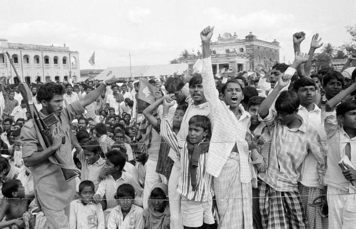

Welcome to Dhaka
The City of Mosques üïå
üèôÔ∏è Introduction
Dhaka (ঢাকা), the capital and largest city of Bangladesh, is a vibrant megacity located on the banks of the Buriganga River. Known as the "City of Mosques" and the "City of Rickshaws," it is one of the most densely populated urban areas in the world. With over 23 million people in the metropolitan area, Dhaka is a cultural, economic, and political hub of South Asia.
üìú History
- Ancient Origins: Dhaka’s roots trace back to 500–200 BC, with archaeological finds linking it to ancient civilizations like Vanga and Gangaridai.
- Medieval Period: Ruled by Gupta, Pala, and Sena dynasties, followed by the Delhi and Bengal Sultanates.
- Mughal Era: Became the capital of Mughal Bengal in 1608, known as Jahangirnagar. Famous for muslin trade and Mughal architecture.
- Colonial Period: Under British rule from 1765, Dhaka became an administrative center and saw modernization.
- Post-Independence: After the partition of India in 1947, Dhaka was the capital of East Pakistan. It played a crucial role in the Liberation War of 1971, leading to the independence of Bangladesh.
- Modern Era: Capital of East Pakistan (1947), and after the Liberation War in 1971, became the capital of independent Bangladesh.



üåç Geography
- Located in south-central Bangladesh, just north of the Buriganga River.
- Lies on the Ganges Delta, surrounded by rivers: Buriganga, Turag, Dhaleshwari, and Shitalakshya.
- Geologically, Dhaka sits on the Madhupur Tract, with clay and alluvial deposits.
- Climate: Tropical wet and dry, with hot summers and monsoon rains.
üìç Location
Dhaka is located at 23.8103° N latitude and 90.4125° E longitude, making it a strategic hub in South Asia.
üé≠ Culture & Traditions
- Festivals: Pohela Boishakh (Bengali New Year), Eid-ul-Fitr, Durga Puja, Victory Day, and Language Movement Day.
- Arts: Rich in folk music, dance, and theater. Baily Road is the heart of Dhaka’s theater scene.
- Cuisine: Famous for biryani, haleem, jilapi, bakorkhani, Beauty-Lacchi, and street food in Old Dhaka.
- Landmarks: Shaheed Minar, Dhakeshwari Temple, and Liberation War Museum reflect Dhaka’s cultural depth.
üíº Economy
- Dhaka contributes 40% of Bangladesh’s GDP, with a nominal GDP of $213.3 billion (2022).
- Key sectors: Textiles, pharmaceuticals, electronics, finance, and telecommunications.
- Home to major companies like BEXIMCO, PRAN-RFL, and the Dhaka Stock Exchange.
- If Dhaka were a country, it would rank 50th globally by GDP.
üåü Famous People from Dhaka
| Name | Profession | Notable Work |
|---|---|---|
| Fazlur Rahman Khan | Architect | Designed Willis Tower & John Hancock Center |
| Mahasweta Devi | Literature & Activism | Bengali writer and social activist, known for works like Hajar Churashir Maa and Rudali |
| Tahsan Rahman Khan | Musician & Actor | "Alo Alo", BRAC University professor |
| Mosharraf Karim | Actor | Acclaimed for TV and film roles |
| Habib Wahid | Composer and pop music pioneer | Gave Many Bangla Hit Albums |
| Mohammad Ashraful | Sportsmen | Former captain of the Bangladesh national cricket team |
üó∫Ô∏è Tourist Attractions
| Place | Description | Rating |
|---|---|---|
| Ahsan Manzil | Pink Palace, museum of Nawab family | ⭐ 4.2/5 |
| Lalbagh Fort | 17th-century Mughal fort | ⭐ 4.3/5 |
| Jatiya Sangsad Bhaban | National Parliament, designed by Louis Kahn | ⭐ 4.3/5 |
| Star Mosque | Ornate mosque with star motifs | ⭐ 4.0/5 |
| Bangladesh National Museum | Artifacts, history, culture | ⭐ 4.1/5 |
| Dhakeshwari Temple | Historic Hindu temple | Cultural landmark |
üè´ Education
- University of Dhaka: Oldest and largest public university, founded in 1921.
- BUET: Bangladesh University of Engineering and Technology, top engineering school.
- Dhaka Medical College: - Established in 1946, it is the oldest and most prestigious medical college in Bangladesh
- Dhaka Education Board: Oversees secondary and higher secondary education.
- International Schools: Numerous international schools offering IB and Cambridge curricula.
- Private Universities: Over 100 private universities, including BRAC University, North South University, and East West University, U I T S.
üì∏ Pics with Info
Thank You for Visiting!
Your interest in Dhaka means the world to me. I hope you enjoyed exploring its rich history and vibrant culture.